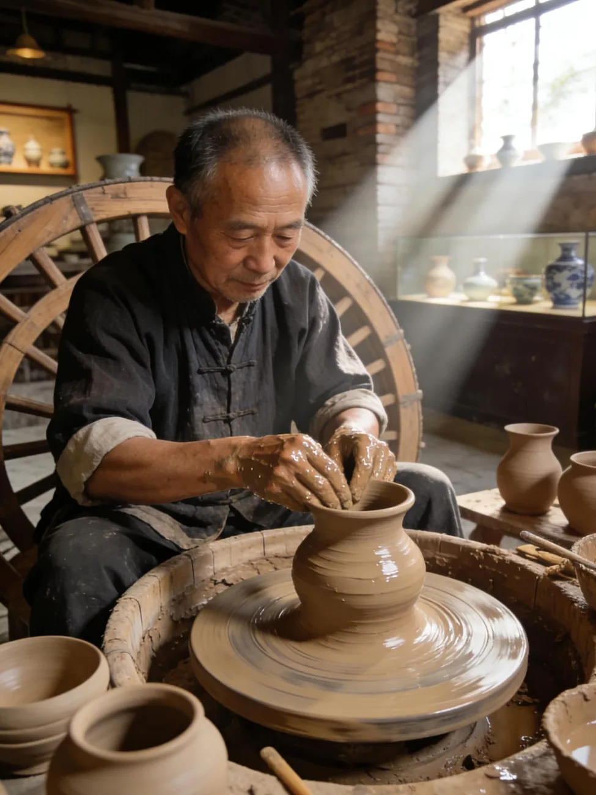

CATALOGUE · 四类辑录
非遗辑录
一器一艺，一腔一调，一节一味。
循着四色，走进流传至今的日常。
四门各有色，百艺自成章。

图像与出处
藏品图片仅作分类意象，不代表全部项目。花瓶：克利夫兰艺术博物馆；皮影影偶：大都会艺术博物馆；端午彩盘：芝加哥艺术博物馆，均按仓库来源记录为 CC0。轮播采用提供的四组照片，共 21 张；图题沿用素材名称，具体对应及来源记录见本页素材说明。
茶砖摄影：Rosser1954，Wikimedia Commons 原图，CC BY-SA 4.0；去背景、缩放及 WebP 转换版本沿用同一许可。茶砖为饮食类别示意图。